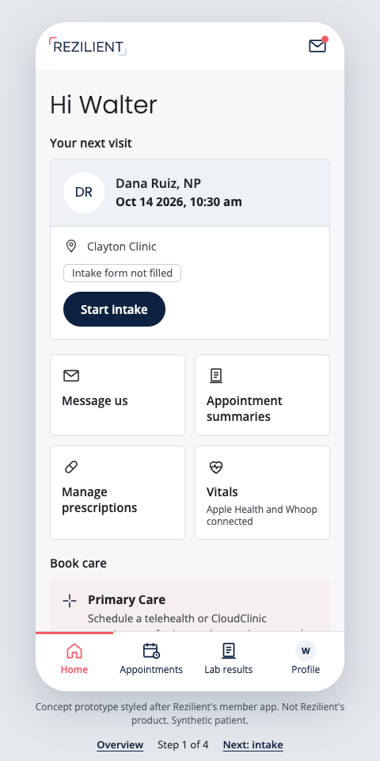
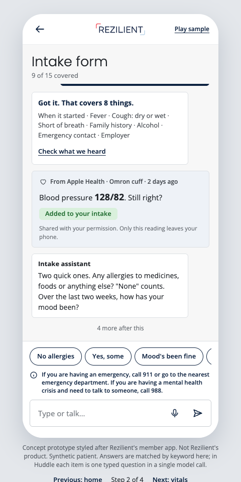
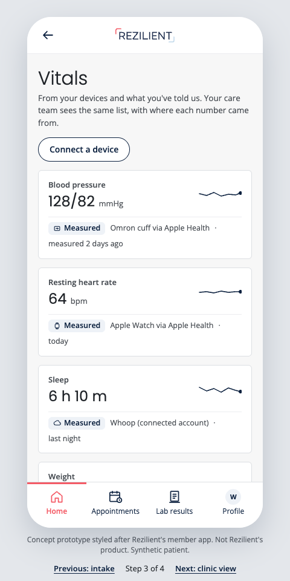
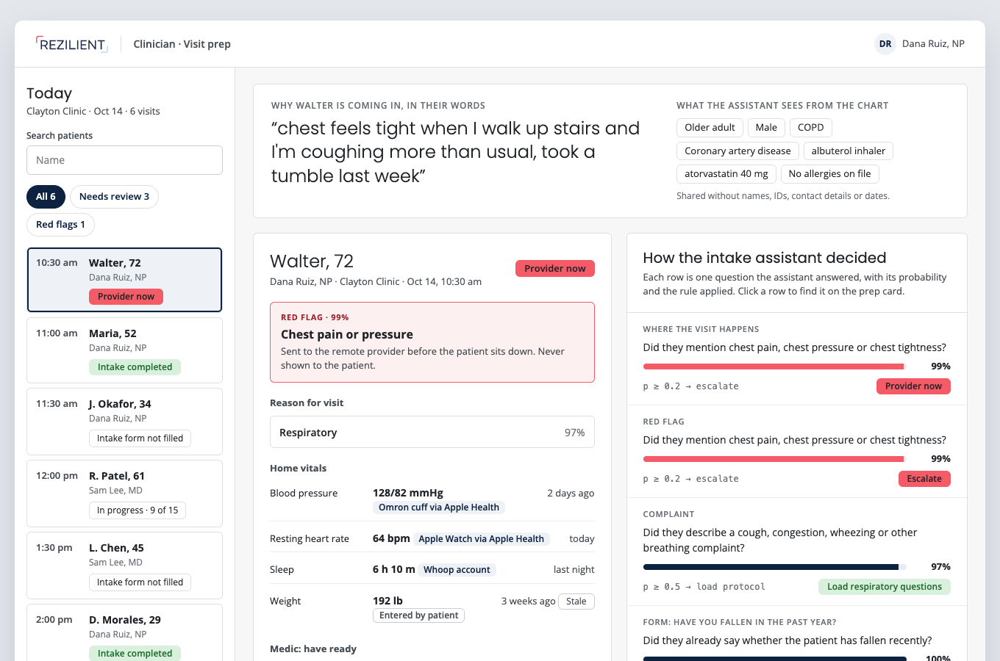

From the phone to the provider
One flow in four screens, styled after Rezilient's member app so the idea reads in context. A member answers their intake in their own words, shares readings from Apple Health and their wearables, and the clinician sees what the intake assistant decided and where every number came from. Each screen is one HTML file; open it and click through.
-

Home
The visit card already says "Intake form not filled", the same step members see today. Vitals shows which devices are connected.
-

Intake
Brain dump first, by voice or text, then two quick follow-ups at a time. A recent Apple Health reading is offered for one-tap confirmation. Press Play sample.
-

Vitals
Every reading carries its source and age, measured versus typed, with stale values flagged. Connect a device shows on-phone data and connected accounts separately.
-

Clinic view
Today's visit queue, with red flags pinned to the top. The prep card shows the red flag routed to the provider and home vitals with their sources, next to every decision the assistant made as question, probability and rule.
Concept prototypes styled after Rezilient's member app from its App Store screenshots. Not Rezilient's product. Synthetic patients only. Model outputs on the clinic view are real runs recorded 9 Oct 2026; the intake screen matches keywords in the browser to show the interaction, and home vitals are illustrative.